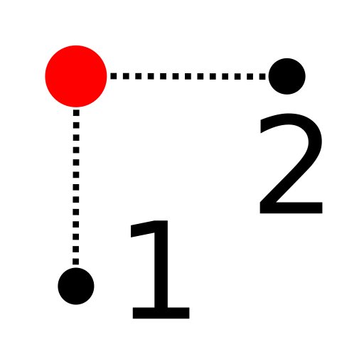
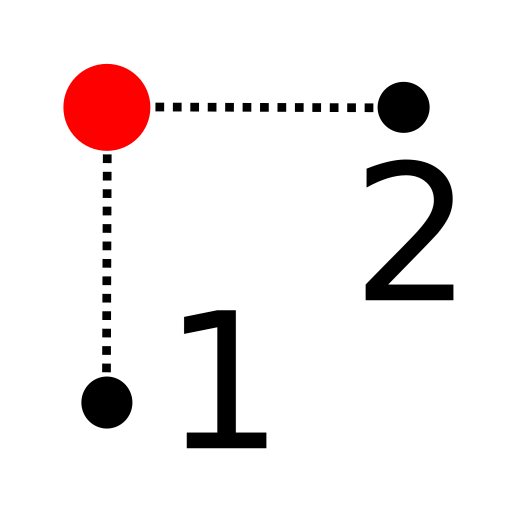
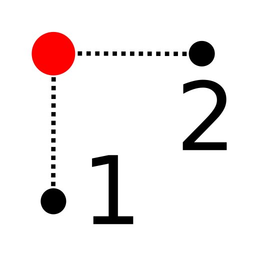

Menu: Pritrdi - X/Y iz točke
Shortcut: ., X
Commands: .x

Opis:
To orodje lahko uporabimo, za prevzem koordinat (npr: X) od enega objekta
ter drugo (Y) od drugega objekta.
To se lahko npr. uporabi za iskanje središča pravokotnika.
Ta pristop je včasih imenovan tudi "Kombiniranje koordinat" ali "Filter koordinat".